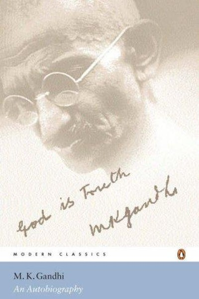

Library › Psychology & People
The Story of My Experiments with Truth — Summary & Key Lessons

Gandhi's life as a laboratory of truth.
📖 OPEN THE FULL INTERACTIVE BREAKDOWN →🌐 Read it in Hindi, Hinglish, Gujarati, Tamil & 22 more languages — free, with audio.
💡 The Big Idea
Gandhi's autobiography is not a chronicle of events but a laboratory notebook: he treated his own life as an experiment in truth, testing principles — non-violence, celibacy, simplicity, fearlessness — and recording the results honestly, including his failures. The book's power is its method: instead of preaching, Gandhi shows a man wrestling with himself, revising his views publicly, and treating character as a science. The lesson: truth is not a possession but a practice — an ongoing experiment where you test your principles against real life and report honestly what works and what doesn't.
🧠 The 6 Key Lessons
Lesson 1: Truth as Experiment, Not Dogma
Part 1: The Method
Gandhi calls his autobiography 'experiments with truth' — deliberately provisional, honest about failures, revised as he learned. His lesson: treat your beliefs as hypotheses, not identities. The person who holds principles as experiments can update them; the person who holds them as dogmas must defend them even when wrong. This is not relativism — Gandhi held truth as the highest value — but humility: he was certain about the process (testing honestly) and open about the conclusions. The experimental attitude is the difference between a thinker who grows and a believer who stalls.
📖 Example: Gandhi publicly admitted his experiments with diet, marriage and even his son's education had failed in places — the admissions were the point. A dogma never says 'I was wrong'; an experiment always reports it. Read the full example →
⚡ Do this: Choose one strongly held belief and run a 30-day experiment: act as if the opposite might be true, observe results, and report honestly to yourself.
Lesson 2: Self-Discipline as Power: The Strength That No One Can Take
Part 2: The Practices
Gandhi's experiments in fasting, celibacy, silence and simplicity were not ascetic theatre — they were training in self-mastery, which he considered the foundation of all other power. A man who cannot control his appetites can be bought; a man who can is dangerous to tyrants. The lesson: self-discipline is not deprivation but independence — the ability to do without what you don't need makes you un-shackleable. The professional who can work without comfort, decide without approval, and resist without craving holds a power that salaries, markets and bosses cannot touch.
📖 Example: Gandhi faced the British Empire with no army, no money and no office — only a discipline so complete that prison, poverty and insult could not bend him. The empire had no lever; the self-mastery was the fortress. Read the full example →
⚡ Do this: Practice one small 'power discipline' this week: a fast from one comfort (screens, sugar, complaint) — and notice how the ability to choose changes your sense of power.
Lesson 3: Fearlessness: The Currency of the Free
Part 3: The Courage
Gandhi's explicit project was the removal of fear — fear of authority, of shame, of death — because he saw fear as the real chains. The British ruled through Indians' fear; remove the fear and the rule dissolves. His lesson: fearlessness is not the absence of danger but the absence of submission. The person who has made peace with the worst outcome (loss, rejection, poverty) cannot be controlled by threats of it. The practical path: rehearse your worst case, make peace with it, and act anyway. Fear is expensive; fearlessness is the discount.
📖 Example: Gandhi walked into meetings with viceroys, courts and crowds armed with nothing but the absence of fear — and his calm in every confrontation was itself the argument. The fearless man had already won the inner battle. Read the full example →
⚡ Do this: Write your worst-case scenario for one risk you're avoiding. Make peace with it in writing. Then take the action you were avoiding.
Lesson 4: Non-Violence Is Strategy, Not Passivity
Part 4: The Weapon
Gandhi's satyagraha was not weakness dressed as virtue — it was a calculated strategy that outmatched violence in specific conditions: it denied the opponent their narrative, cost them the moral high ground, and recruited sympathy as an army. His lesson: non-violence requires more courage and discipline than violence — it is the harder weapon. The modern translation: in any conflict, the side that controls the narrative, keeps the moral high ground, and converts opponents through persistence often wins without 'winning'. The passive person is not non-violent; the strategic one is.
📖 Example: The salt march — a small act of defiance against a massive empire — outflanked British power by making the empire's own laws look absurd. The strategy was non-violent and utterly ruthless in its clarity. Read the full example →
⚡ Do this: In one current conflict, refuse the escalation path. Hold your ground calmly, state your case clearly, and let the other side's aggression become their problem. Observe the shift.
Lesson 5: The Inner Voice: Listening Requires Quiet
Part 5: The Stillness
Gandhi's major decisions came after periods of silence and prayer — he called it listening to the inner voice. His lesson: clarity is not produced by more input but by more stillness. The modern professional drowns the inner voice in notifications, noise and busyness, then wonders why decisions feel foggy. Gandhi's practice — a weekly day of silence, daily quiet reflection — is available to anyone: a phone-free hour, a walking meditation, a journal. The person who regularly listens to their own depth makes decisions that feel 'right' because they've heard the quiet answer.
📖 Example: Gandhi's most consequential choices — the fasts, the marches, the negotiations — were preceded by silence, and he described the guidance as coming through stillness. The quiet was the technology. Read the full example →
⚡ Do this: Schedule 30 minutes of phone-free quiet this week — no input, just listening. Before your next big decision, repeat it and note what surfaces.
Lesson 6: The Means Are the Ends: How You Travel Is Where You Arrive
Part 6: The Philosophy
Gandhi's most radical lesson: the means and the ends are inseparable — you cannot reach truth through lies, freedom through oppression, or peace through violence, because the path becomes the destination. His famous formulation: 'as the means, so the end.' The lesson for every builder: the process you use is the product you get — a company built on shortcuts builds a shortcut culture; a life built on compromises becomes a compromise. If the way you're working doesn't look like the life you want, you're not heading there. The means are the end in progress.
📖 Example: Gandhi refused to win India's freedom through violence because a freedom won by violence would be a violent freedom. The method had to match the dream — the means were the preview of the end. Read the full example →
⚡ Do this: Audit your process: does your daily method look like the result you want? Change one means this week to match the end you claim to want.
✅ 5-Step Action Plan
- Run one 30-day experiment on a strongly held belief.
- Practice one 'power discipline' — a fast from a comfort.
- Write and make peace with your worst case, then act.
- Schedule 30 minutes of quiet before your next big decision.
- Change one means this week to match the end you want.
💬 Best Quotes from The Story of My Experiments with Truth
- “Truth is not a possession but a practice — an experiment honestly reported.”
- “Fearlessness is not the absence of danger but the absence of submission.”
- “As the means, so the end — the path becomes the destination.”
Interactive version: mark lessons as read, listen in your language, share quote cards.